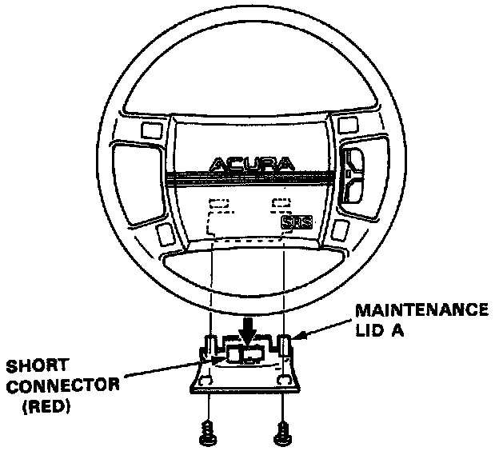
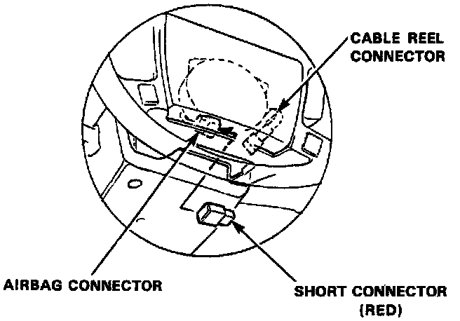
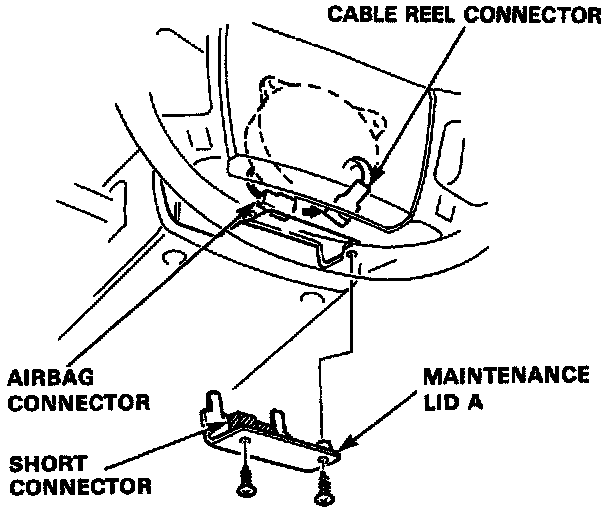

Air Bag(s) Arming and Disarming: Service and Repair
Disarming Procedure1. Disconnect both the negative cable and positive cable from the battery.
Remove Maintenance Lid:

2. Remove maintenance lid A below the airbag, then remove the short connector.
3. Disconnect the connector between the airbag and cable reel.
Install Short Connector On Airbag Connector:

4. Connect the short connector to the airbag side of the connector.
Arming Procedure
1. Disconnect the short connector from the airbag connector.
Reconnect Airbag And Cable Reel Connector:

2. Connect the airbag 2-P connector and cable reel 2-P connector back together.
3. Attach the short connector to lid A and attach to the steering wheel.
4. Turn on the ignition to the II position. The instrument panel SRS light should go on for about 8 seconds and then go off.
5. If SRS light does not go on or goes on and stays on then proceed to On Board Diagnostics under System Diagnosis.